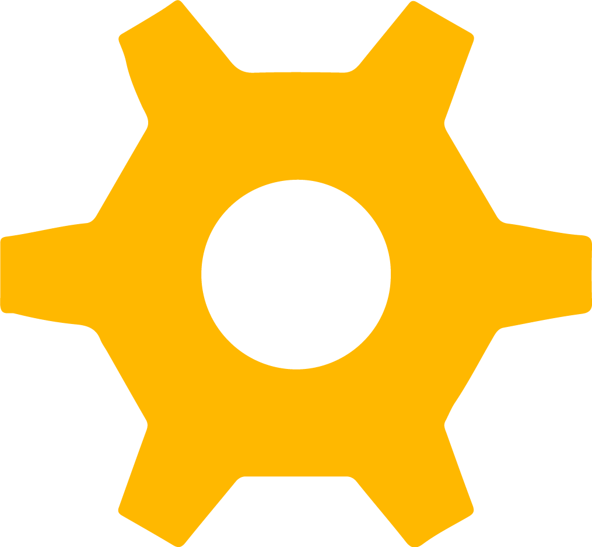
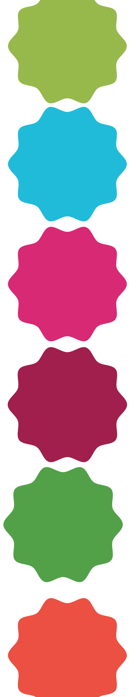
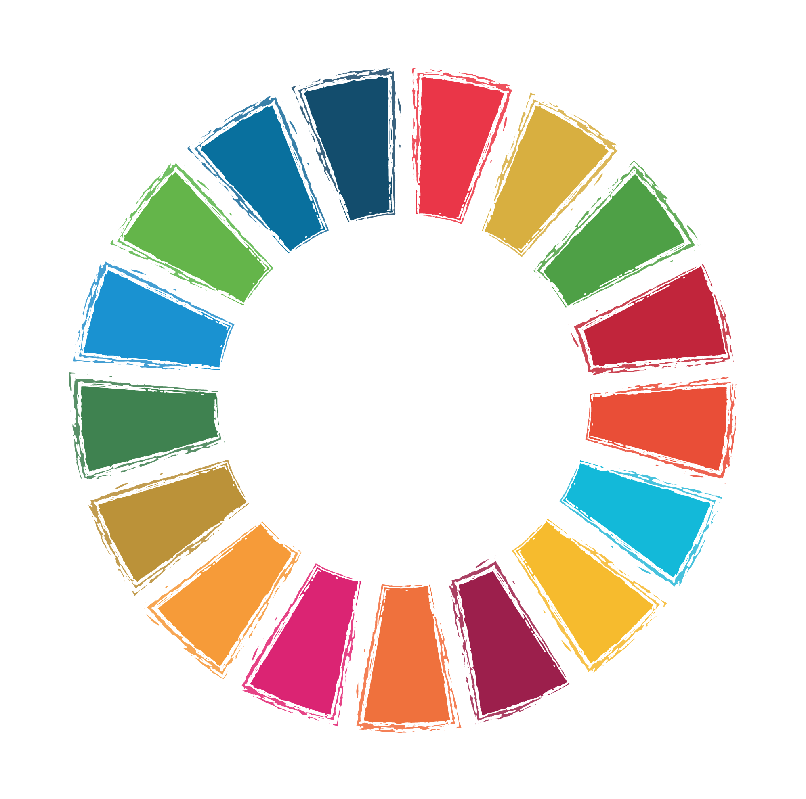
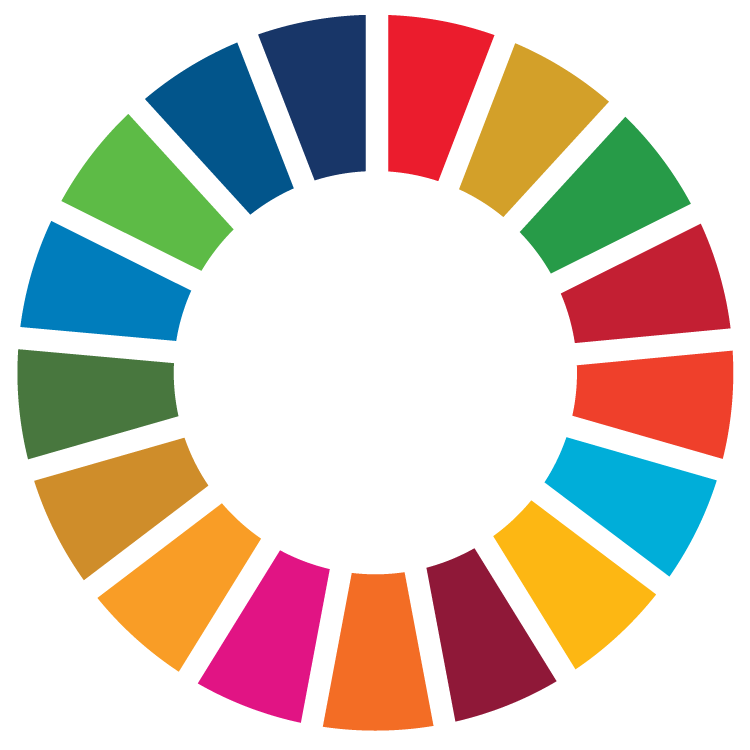
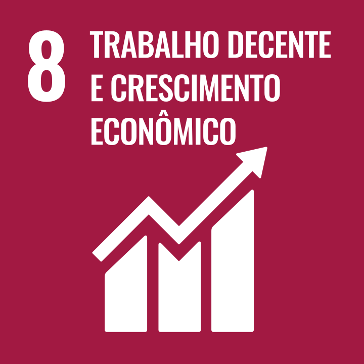
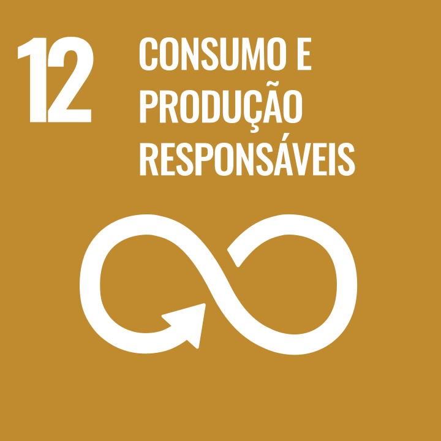

Guia completo de identidade de marca — posicionamento, voz, visual e aplicacoes para a empresa lider em projetos de impacto no Brasil.
v2.0 — Marco 202622+ anos de impacto1.060+ projetos

01 Fundacao
Proposito & DNA
A essencia da NTICS — quem somos, o que nos move e para onde vamos.
Missao: Conectar empresas e comunidades por meio de projetos de impacto que unem inovacao, cultura e sustentabilidade.
Visao 2030: Ser o maior ecossistema brasileiro de impacto educacional e regenerativo — com R$ 115M de faturamento, 4 HUBs ESG, 3 milhoes de alunos e 1 milhao tCO2 compensadas.
Nossos Numeros
1.060+
Projetos de Impacto
11.4M
Pessoas Impactadas
22+
Anos de Atuacao
165+
Cidades Atendidas
NPS 88
Satisfacao de Clientes
75%
Lideranca Feminina
Valores Fundamentais
Honestidade
Integridade em cada decisao. Agir com transparencia, responsabilidade e coerencia — mesmo quando ninguem esta olhando.
Beleza
Fazer tudo com estetica, leveza e harmonia. A beleza e a forma visivel do cuidado e do amor pelo que fazemos.
Autorresponsabilidade
Assumir o protagonismo. Nao culpar, nao terceirizar. Ser parte da solucao e reconhecer o proprio papel em cada resultado.
Verdade
Comunicar com clareza, autenticidade e respeito. A verdade e o alicerce da confianca e do crescimento coletivo.
Servico
Servir e a essencia do nosso trabalho. Cada projeto, cliente e colega e uma oportunidade de oferecer o melhor de nos.
Simplicidade
Fazer o essencial com excelencia. Reduzir o ruido, valorizar o essencial, deixar o trabalho fluir com clareza e proposito.
01 Fundacao
Posicionamento
Como a NTICS se posiciona no mercado e para quem fala.
Para empresas que buscam impacto social mensuravel, a NTICS Projetos e a parceira estrategica de projetos de impacto que transforma responsabilidade social em desenvolvimento humano — porque impacto real se constroi com metodologia, inovacao e 22 anos de experiencia.
Personas B2B
A NTICS vende projetos de impacto social via Leis de Incentivo Fiscal para empresas de grande porte (investimento minimo R$500K). O funil de decisao envolve duas personas distintas.
Persona Principal
Marina Costa
Coord. / Gerente / Diretora de RSC ou Sustentabilidade
Empresa
Grande porte | Investimento min. R$500K (~4% IR) | Setores: industria, energia, agro, bens de consumo, financeiro
O que faz
Gerencia a estrategia de RSC/ESG da empresa. Decide ou recomenda quais projetos patrocinar via Leis de Incentivo (Rouanet, Esporte, FIA, FUMCAD, Pronas, Pronon). Justifica investimentos para o board com dados de impacto.
O que precisa saber
O que e o projeto e qual a proposta. Como gera impacto mensuravel. Conexao com ODS/ESG. Mecanismo de Lei de Incentivo. Credibilidade e track record da NTICS.
Dores
Encontrar projetos serios (nao greenwashing). Justificar internamente com dados concretos. Cumprir metas ESG. Seguranca juridica e compliance.
Tom ideal
Tecnico-consultivo. Dados + narrativa de impacto. Vocabulario ESG/RSC. Provas: ISO 9001, Pacto Global, GRI, metricas verificaveis.
Persona Aprovadora
Carlos Ferreira
Diretor (RSC, Marketing, Financeiro ou CEO)
Papel
Aprovacao final da destinacao do recurso via Lei de Incentivo. Recebe a recomendacao da Marina e decide com base em alinhamento estrategico.
O que precisa
Resumo executivo claro. Seguranca juridica. Alinhamento com a marca da empresa. ROI social demonstravel. Numeros de impacto em formato dashboard.
Formato preferido
Apresentacoes concisas, one-pagers, dashboards de impacto. Nao quer detalhes operacionais — quer visao estrategica e seguranca.
Tom ideal
Direto e objetivo. Sem jargoes desnecessarios. Foco em resultado, reputacao e compliance. CTAs: "Simule o investimento" / "Fale com nosso time".
Jornada de Captacao
Captacao Ativa
Equipe comercial prospecta
1. Equipe NTICS identifica e contata profissionais de RSC/Sustentabilidade que ja conhecem Leis de Incentivo
2. Marina avalia proposta: impacto, ODS, credibilidade, numeros
3. Marina apresenta internamente para Carlos aprovar
4. Formalizacao do patrocinio
Captacao Passiva
Conteudo atrai leads
1. Marina encontra conteudo NTICS sobre RSC, ESG ou Leis de Incentivo (LinkedIn, blog, redes)
2. Consome conteudo, reconhece expertise da NTICS
3. Entra em contato espontaneamente
4. Segue fluxo de avaliacao e aprovacao
Estrategia de Conteudo (Captacao Passiva)
Cada peca de conteudo integra os 3 eixos simultaneamente:
Leis de Incentivo — como funcionam, beneficios fiscais, cases de empresas RSC e ESG — estrategias, tendencias, indicadores, boas praticas Projetos e Impacto — resultados NTICS, numeros, historias de transformacao
O conteudo educa o publico e posiciona a NTICS como solucao completa — da lei ao impacto.
01 Fundacao
Arquetipo de Marca
A personalidade da NTICS expressa em tres arquetipos complementares.
Sabio 50%
Criador 30%
Cuidador 20%
Sabio (Sage) — 50%
Conhecimento como motor de mudanca. 22 anos de experiencia, metodologia propria, dados e indicadores que sustentam cada decisao. Credibilidade tecnica e visao estrategica.
Criador (Creator) — 30%
Inovacao como comportamento diario. LAB NTICS, IA em 100% dos processos, novas metodologias educativas. Traduz tendencias globais em experiencias reais.
Cuidador (Caregiver) — 20%
Impacto humano genuino. 11.4 milhoes de pessoas impactadas, comunidades transformadas. Desenvolvimento humano como base para o desenvolvimento sustentavel.
02 Identidade Verbal
Tom de Voz
Como a NTICS fala — pilares de comunicacao que guiam toda mensagem.
Informativa
Dados concretos, indicadores mensuraveis, transparencia nos resultados.
Confiante
22 anos de experiencia, 1.060+ projetos — autoridade que vem da pratica.
Inspiradora
Historias reais de transformacao, visao de futuro regenerativo.
Acessivel
Linguagem clara, sem jargoes desnecessarios. Complexo tornado simples.
Faca / Nao Faca
Faca assim
"Impactamos 11.4 milhoes de pessoas em 22 anos de atuacao."
"Nossos projetos geram resultados mensuraveis."
"Conectamos empresas a territorios com metodologia propria."
"Projetos de impacto com inovacao e governanca."
Evite isso
"Somos os melhores do mercado de CSR."
"Fazemos o bem para a sociedade."
"Utilizamos metodologias disruptivas de ultima geracao."
"Somos uma empresa que se preocupa com o planeta."
02 Identidade Verbal
Mensagens-Chave
Taglines, manifesto e pilares de comunicacao.
Tagline Principal
"Projetos que transformam realidades."
Tagline ESG
"Impacto mensuravel. Inovacao com proposito."
Tagline Inspiracional
"De projetos pontuais para ecossistemas de impacto."
Tagline Cultura
"Sustentavel porque e util, escalavel porque e humano."
Manifesto NTICS 2026
Planejamento e Liberdade. Execucao e Respeito. Impacto e Responsabilidade.
Nos existimos para transformar estrategia em impacto real. A NTICS nasce e se mantem como uma empresa de projetos inovadores, criada para conectar empresas, territorios e pessoas por meio de educacao, sustentabilidade, ESG e responsabilidade social estruturada.
A lampada com engrenagens: ideias que geram movimento e transformacao.
Conceito
A logo da NTICS e composta por uma lampada formada por multiplas engrenagens — simbolizando ideias (lampada) que se transformam em acao e movimento (engrenagens). A engrenagem central amarela representa a inovacao como nucleo. O verde representa sustentabilidade e regeneracao. A base cinza da lampada traz estabilidade e solidez tecnica.
Aplicacoes do Logo
Fundo Branco
Azul Petroleo
Verde Escuro
Rosa
Cinza Claro
Laranja
Simbolo (Lampada)
Fundo Branco
Azul Petroleo
Grafite
Usos Proibidos
Nao rotacionar o logo
Nao distorcer proporcoes
Nao alterar as cores
Nao usar com opacidade baixa
Nao usar em fundo confuso
Nao aplicar sombras ou efeitos
03 Identidade Visual
Paleta de Cores
Clique em qualquer cor para copiar o codigo HEX.
Primarias (70%)
Verde Logo
#8DC63F
Cor principal da marca
Verde Escuro
#3DAA35
Sustentabilidade, natureza
Azul Petroleo
#003D4D
Institucional, seriedade
Rosa Transformacao
#D41A6A
Impacto, energia, campanhas
Secundarias (25%)
Amarelo Consciencia
#F5B800
Inovacao, lampada, destaques
Laranja Acao
#E86428
CTAs, dinamismo
Teal Futuro
#00A5B8
Tecnologia, ESG, IA
Roxo Inovacao
#6B2D7B
Inovacao social, tecnologia
Suporte (5%)
Cinza Base
#A7A9AC
Base da lampada, texto secundario
Grafite
#2D2D2D
Texto principal
Cinza Claro
#F4F4F4
Fundos secundarios
Branco
#FFFFFF
Fundos principais
Proporcao de Uso
70% Primarias
25% Sec.
5%
03 Identidade Visual
Tipografia
Inter (Google Fonts) — alternativa web para Helvetica Neue.
H1 — Inter Bold 48px / line-height 1.15
Projetos que Transformam
H2 — Inter Bold 36px / line-height 1.2
Impacto Mensuravel
H3 — Inter SemiBold 28px / line-height 1.3
Inovacao com Proposito
H4 — Inter SemiBold 22px / line-height 1.35
Educacao e Sustentabilidade
Body — Inter Regular 16px / line-height 1.6
A NTICS Projetos e uma empresa de projetos inovadores de impacto, especializada em estruturar, executar e comunicar programas estrategicos de Educacao, Sustentabilidade, ESG e CSR.
Caption — Inter Regular 12px / line-height 1.5
Fonte: Relatorio de Sustentabilidade NTICS 2023/2024. Dados auditados conforme padrao GRI.
03 Identidade Visual
Elementos Visuais
Blocos geometricos solidos e engrenagens decorativas — o DNA visual da NTICS.
Blocos Geometricos
Retangulos com cantos arredondados, 100% solidos (sem transparencia), sobrepostos assimetricamente.
Icones da Marca
Engrenagens e lampada — os elementos iconicos da NTICS. Usar como elementos decorativos, divisores, icones tematicos e composicoes visuais.

Roda ODS (Global Goals)
A roda dos Objetivos de Desenvolvimento Sustentavel da ONU — referencia visual para materiais ESG.

Padrao de Blocos Coloridos
Grid vibrante inspirado nos Global Goals — usado como textura de fundo em materiais institucionais.
Barra de Cores
Faixa horizontal multicolorida com segmentos da paleta NTICS + Global Goals. Usar como header de pagina, divisor de secao, separador em emails, rodape de slides e elemento decorativo em documentos.
Barra de cores como divisor horizontal em qualquer material
Manter a sequencia de cores da barra consistente
Evite
Blocos com opacidade ou transparencia
Composicoes simetricas ou "centradas"
Engrenagens com outline (use preenchimento solido)
Filtros monocromaticos sobre fotos
Alterar a ordem das cores na barra
Usar a barra na vertical (apenas horizontal)
03 Identidade Visual
ODS & Global Goals
Como a NTICS utiliza as cores, icones e linguagem visual dos Objetivos de Desenvolvimento Sustentavel da ONU em seus materiais.

A Roda dos ODS
A NTICS e signataria do Pacto Global da ONU desde 2018. Os 17 Objetivos de Desenvolvimento Sustentavel (ODS) sao referencia central na comunicacao da marca. A roda colorida dos Global Goals pode ser usada em materiais institucionais, relatorios e apresentacoes.
Pacto Global ONUGRI StandardsESG
Os 17 Objetivos de Desenvolvimento Sustentavel
Os ODS prioritarios da NTICS (4, 8, 12, 17) estao destacados com borda. Todos os icones sao oficiais da ONU e podem ser usados em materiais institucionais.


ODS Prioritarios da NTICS
Educacao de Qualidade
245.134+ alunos impactados em rede publica. Programas educacionais em 165+ cidades.
Cores NTICS associadas
Trabalho Decente
Capacitacao profissional, habilidades socioemocionais e insercao produtiva nas comunidades.
Cores NTICS associadas
Consumo Responsavel
Zero Paper alcancado. 100% emissoes neutralizadas. Brindes sustentaveis.
Cores NTICS associadas
Parcerias e Meios
10.000+ empresas, 1.700 parceiros. Ecossistema Grupo NEST com 4 empresas integradas.
Cores NTICS associadas
Mapeamento: Cores NTICS x ODS
Quando materiais tratam de ODS especificos, priorize as cores da paleta NTICS que dialogam com aquele objetivo.
Contexto / ODS
Cores NTICS Recomendadas
Uso
ODS 4 — Educacao
Verde + Roxo
Programas educacionais, oficinas, habilidades socioemocionais
ODS 5 — Igualdade de Genero
Rosa + Roxo
Lideranca feminina (75%), diversidade, inclusao
ODS 8 — Trabalho Decente
Azul Petroleo + Laranja
Capacitacao, empregabilidade, economia criativa
ODS 12 — Consumo Responsavel
Teal + Verde
Zero Paper, neutralizacao de carbono, ESG
ODS 13 — Acao pelo Clima
Verde + Teal
Compensacao de emissoes, sustentabilidade ambiental
ODS 17 — Parcerias
Azul Petroleo + Rosa
Parcerias estrategicas, Grupo NEST, Pacto Global
Faca
Use a roda ODS oficial em relatorios de sustentabilidade
Cite o numero do ODS ao lado de indicadores e metas
Use as cores NTICS associadas ao ODS do contexto
Inclua a roda ODS em materiais ESG e apresentacoes B2B
Use engrenagens coloridas como icones tematicos dos ODS
Evite
Alterar as cores oficiais da roda ODS da ONU
Usar icones ODS sem conexao real com os projetos NTICS
Misturar cores ODS oficiais com a paleta NTICS no mesmo elemento
Citar todos os 17 ODS — foque nos 4 prioritarios
Usar a roda ODS como elemento meramente decorativo
Padrao Visual Global Goals
Grid de blocos coloridos inspirado na paleta dos Global Goals. Usar como textura de fundo em capas, divisorias de capitulos e materiais institucionais.
Aplicacao: capas de relatorios, backgrounds de slides, divisorias visuais. Nunca sobrepor texto diretamente sobre o padrao sem overlay escuro.
03 Identidade Visual
Direcao Fotografica
Como selecionar e tratar imagens para comunicacao NTICS.
B2B / Corporativo
Ambientes profissionais, reunioes, telas com dados, equipes em acao. Tom institucional e confiavel.
Projetos / Impacto
Pessoas aprendendo, comunidades em atividade, criancas em oficinas, detalhes de interacao real. Tom humano e autentico.
Institucional
Natureza, sustentabilidade, metaforas visuais de regeneracao. Tom inspirador e aspiracional.
Faca
Fotos vibrantes com cores naturais
Composicao foto + blocos solidos sobrepostos
Pessoas reais em situacoes autenticas
Diversidade e representatividade
Evite
Filtros monocromaticos ou opacidade pesada
Fotos de banco generico ou posadas
Imagens pixeladas ou de baixa resolucao
Fotos sem contexto ou sem pessoas
04 Ferramentas
Biblioteca de Prompts — Identidade Visual Aplicada
Sistema completo de prompts que traduzem a identidade visual NTICS para ferramentas de criacao. Cada prompt carrega o DNA da marca — cores, blocos geometricos, engrenagens, tom e composicao — para que qualquer ferramenta reproduza a identidade com fidelidade.
Prefixo reutilizavel. Cole no inicio de qualquer prompt para carregar a identidade NTICS na ferramenta.
DNA Visual
Prompt Base NTICS
Prefixo reutilizavel — cole antes de qualquer prompt especifico
Brand identity: NTICS Projetos — social impact consultancy. Color palette: green #8DC63F and #3DAA35 (primary, sustainability), dark teal #003D4D (institutional), pink #D41A6A (transformation), yellow #F5B800 (innovation, lamp icon), orange #E86428 (action), teal #00A5B8 (technology/ESG), purple #6B2D7B (social innovation). Visual elements: mechanical gears forming a lightbulb shape, rounded geometric blocks (8-12px radius), asymmetric compositions. Style: clean, modern, corporate-humanized, professional yet warm. No transparency overlays, no monochromatic filters. Solid colors, bold geometry. Archetypes: Sage (credibility) + Creator (innovation) + Caregiver (human warmth). Themes: social impact, sustainability, ESG, education, UN SDGs, technology for good.
02 — Estilo de Imagem
Prompts que definem o estilo visual para ferramentas de geracao de imagem (Midjourney, DALL-E, Leonardo, Ideogram, Flux). Cada um aplica a linguagem visual NTICS de forma diferente.
Estilo Principal
Blocos Geometricos NTICS
Image style: modern corporate design with bold rounded geometric blocks (border-radius 8-12px). Blocks are 100% solid colors — never transparent or semi-opaque. Colors: green #8DC63F (dominant, 40%), dark teal #003D4D (structural, 25%), pink #D41A6A (accent, 15%), yellow #F5B800 and orange #E86428 (highlights, 10%), teal #00A5B8 and purple #6B2D7B (touches, 10%). Composition: asymmetric, blocks overlap at different scales creating depth. White negative space is intentional. Small white mechanical gear icons (6 rounded teeth) float between blocks as decorative elements. No gradients, no drop shadows on blocks, no transparency. Clean, confident, professional but warm. Think: sustainability report meets tech startup.
Estilo Alternativo
Mosaico Global Goals
Image style: vibrant colorful mosaic inspired by the UN Sustainable Development Goals color wheel. Grid of small squares and rectangles in 17 colors: #E5243B, #DDA63A, #4C9F38, #C5192D, #FF3A21, #26BDE2, #FCC30B, #A21942, #FD6925, #DD1367, #FD9D24, #BF8B2E, #3F7E44, #0A97D9, #56C02B, #00689D, #19486A. Blocks have slightly rounded corners. The pattern is dense, celebratory, and optimistic. Use as background texture, border pattern, or decorative strip. When combined with content, overlay a semi-transparent dark teal (#003D4D at 85%) panel for text readability.
Estilo Iconico
Engrenagens e Lampada
Image style: mechanical gears and lightbulb motif. The NTICS brand symbol is a lightbulb shape composed of interlocking gears — representing ideas (lamp) transformed into action (gears). Gears have 6 rounded teeth, flat solid fill, no outlines. Primary gear colors: green #8DC63F and #3DAA35. One accent gear in yellow #F5B800 (the "spark of innovation"). Lamp base in gray #A7A9AC. Use gears as: floating decorative elements, pattern backgrounds, section dividers, or assembled into the lightbulb shape. Always solid fill, never outline-only. Gears can be white on colored backgrounds.
Direcao Fotografica
Tom Fotografico NTICS
Photography style: authentic, warm, vibrant natural colors — never desaturated or moody. Show real people in real situations: diverse communities learning, children in workshops, professionals collaborating, hands building together. Natural lighting, candid moments preferred over posed shots. Skin tones must be accurate and warm. Three tiers: (1) B2B/Corporate: professional environments, meetings, data screens — accent dark teal #003D4D; (2) Projects/Impact: people learning, communities active — accent green #8DC63F; (3) Institutional: nature, sustainability metaphors — accent yellow #F5B800. Never victimize subjects — show agency and protagonism.
03 — Composicao Visual (Foto + Marca)
Prompts para compor imagens reais dentro do layout de marca. Use em Leonardo, Midjourney ou qualquer ferramenta com imagem de referencia. Campos entre [colchetes] sao editaveis.
Leonardo / Midjourney / Canva
Post com Foto de Projeto
Create a branded social media post layout, 1080x1080px. Use the attached photo as the main image occupying 60% of the canvas (left or top area). The photo should have rounded corners (8px). On the remaining 40%, place a solid green (#8DC63F) background with white bold text for [TITULO DO POST] and smaller white text for [SUBTITULO OU DADO DE IMPACTO]. Add a dark teal (#003D4D) bar at top (6px). Small white gear icon where photo meets color block. Bottom: dark teal bar with white logo. No transparency, no filters on photo — vibrant natural colors. Asymmetric, modern.
Leonardo / DALL-E / Canva
Card de Indicador / Dado ESG
Data highlight card, 1080x1080px. White background. Top: color bar (17 Global Goals colors, 6px). Center: large bold "[NUMERO]" in green #8DC63F (~120px), description "[INDICADOR]" in #2D2D2D below. Decorative: overlapping rounded blocks — teal #00A5B8 top-right and pink #D41A6A bottom-left. White gear icon near number. Bottom: dark teal #003D4D strip with "NTICS Projetos" and ODS [N] badge.
Midjourney / Leonardo
Capa de Relatorio / Documento
Document cover, A4 portrait. Dark teal (#003D4D) background. Attached photo inside rounded rectangle (12px, 3px green #8DC63F border) upper-right ~45%. Three overlapping blocks: large green #8DC63F bottom-left behind photo, medium pink #D41A6A mid-left, small yellow #F5B800 accent. White gears scattered (3-5, different sizes). Title "[TITULO]" white Inter Bold, left-aligned, upper-left. Logo white bottom-left. Color bar (17 Global Goals, 4px) at absolute bottom. --ar 3:4
Canva / Figma / Leonardo
Banner Horizontal / Header
Wide banner, 1920x600px. Left 50%: dark teal (#003D4D) with white title "[TITULO]" bold, subtitle "[SUB]" 70% white, colored tag pills. Right 50%: attached photo with rounded left corners (16px), green (#8DC63F) and pink (#D41A6A) blocks at junction. White gears at intersection. Color bar (17 Global Goals, 4px) bottom. Logo white top-left. --ar 16:5
04 — Tema de Apresentacao
Instrucoes completas para Gamma, Canva, PowerPoint ou Google Slides. Cole o tema inteiro como instrucao de estilo — ele define cores, tipografia, layouts, iconografia e estilo de imagem.
Gamma / Canva / PowerPoint
Tema Institucional NTICS — Completo
Cole este prompt inteiro como instrucao de tema/estilo
THEME: NTICS Projetos — Social Impact Brand
COLOR SYSTEM:
- Primary background: dark teal #003D4D (covers, section dividers, emphasis slides)
- Secondary background: white #FFFFFF (content slides)
- Tertiary background: light gray #F4F4F4 (data slides, quotes)
- Primary accent: green #8DC63F (titles, numbers, highlights, progress bars)
- Secondary accent: pink #D41A6A (CTAs, important callouts, alerts)
- Tertiary accent: teal #00A5B8 (links, secondary data, ESG content)
- Support: yellow #F5B800 (stars, badges), orange #E86428 (buttons), purple #6B2D7B (innovation)
- Text primary: #2D2D2D | Text secondary: #6B7280 | Text on dark: #FFFFFF
TYPOGRAPHY:
- Headlines: Inter Bold/ExtraBold, letter-spacing -0.02em
- Body: Inter Regular 16px, line-height 1.6
- Data/numbers: Inter Black, oversized 48-72px, color green #8DC63F
- Labels: Inter SemiBold 11px, uppercase, letter-spacing 0.08em
LAYOUT RULES:
- All shapes: rounded corners 8-12px
- Asymmetric compositions — never center everything
- Generous white space (48px+ padding)
- Geometric blocks as decorative overlapping elements at edges
- No drop shadows, no gradients, no transparency on blocks
IMAGE STYLE:
- Vibrant, warm, natural colors. Real people, authentic situations
- Photo frames: rounded 12px, optional 3px green border
- Photos break the grid — overlap geometric blocks
- Never stock-posed, monochromatic, or heavy overlay
DECORATIVE ELEMENTS:
- Mechanical gears (6 rounded teeth): white on dark, green on white
- Color bar: thin strip (4-6px) with 17 Global Goals colors at top/bottom
- Rounded colored pills for category tags
- Thin green #8DC63F lines as separators
SLIDE TYPES:
- Cover: dark teal bg, bold white title, green accent block, color bar bottom
- Content: white bg, left-aligned, decorative block in corner
- Data: large green numbers, icon row, gray bg
- Case study: 50% photo + 50% content, pink accent header
- Divider: full-color bg, overlapping blocks, white text
- Quote: light gray bg, large green quotation mark
- Closing: dark teal bg, pink CTA, white contact info
ICONS: line style, 2px stroke, rounded caps. Color matches section accent.
Gamma / Canva
Tema ESG / Sustentabilidade
Variacao para relatorios e materiais de sustentabilidade
THEME: NTICS Projetos — ESG & Sustainability Report Style
Extend the base NTICS theme with these ESG-specific rules:
COLOR EMPHASIS: green #3DAA35 and teal #00A5B8 as dominant accents. Purple #6B2D7B for innovation sections. Pink #D41A6A for impact highlights only.
MANDATORY ELEMENTS:
- Color bar (17 Global Goals colors, 4px) on every slide
- SDG wheel icon (small, corner) on data slides
- SDG number badges: colored circles with white number
DATA VISUALIZATION:
- Charts: green #8DC63F (positive), teal #00A5B8 (neutral), pink #D41A6A (attention), orange #E86428 (action)
- Large numbers in green #8DC63F, Inter Black, 64-96px
- Progress bars with rounded ends
- Before/after: green (after) vs gray #A7A9AC (before)
IMAGERY: nature, communities, sustainable practices, corporate meetings with data screens. Authentic, never stock. Green tint — boost greens slightly.
TONE: data-driven, transparent, credible. Every claim backed by a visible number.
05 — Motion Design / Video
Prompts para Runway, Sora, Kling, After Effects. Definem estilo de movimento, transicoes e linguagem visual em video.
Runway / Sora / After Effects
DNA de Motion — Estilo Base
Motion design DNA for NTICS Projetos:
MOVEMENT: ease-out entries (confident), ease-in-out transitions (smooth). 0.4-0.8s element entries. Elements enter from edges, slide or rise. Never pop or bounce. Gears rotate slowly (2-4rpm), clockwise, interlocking.
COLORS: dark teal #003D4D (backgrounds), green #8DC63F (primary elements), pink #D41A6A (accents, impact), yellow #F5B800 (spark, highlights), teal #00A5B8 (data, tech), orange #E86428 (energy), purple #6B2D7B (innovation).
SIGNATURE MOTIONS:
1. "Gear Assembly": gears float in, rotate, interlock into lightbulb — openings/closings
2. "Block Slide": solid rounded rectangles slide from edges, overlap asymmetrically — transitions
3. "Color Bar Sweep": 17-color Global Goals bar wipes left-to-right — section changes
4. "Data Pulse": numbers count up from 0 in green #8DC63F — impact stats
TYPOGRAPHY: headlines slide in from left (95% to 100% scale). Numbers count up, Inter Black. Subtitles fade in 0.3s after headline.
Runway / Sora / Kling
Abertura de Video Institucional
5-second intro. Dark teal (#003D4D) background. 0-2s: green (#8DC63F) gears of varying sizes float in from edges, rotating, interlocking. One yellow (#F5B800) gear enters last — the spark. 2-3.5s: gears assemble into lightbulb shape. Colored blocks (pink #D41A6A, teal #00A5B8, orange #E86428) slide in as rectangles, settling behind lightbulb. 3.5-4.5s: "NTICS" white bold fades in right of lightbulb, "Projetos" below lighter. 4.5-5s: color bar (17 Global Goals) wipes bottom. Subtle glow on yellow gear. 24fps, clean.
After Effects / Premiere
Transicoes, Lower Thirds e End Card
TRANSITION "Block Wipe": green #8DC63F from left + pink #D41A6A from right slide across, overlap briefly (white gear visible), exit. 0.6s.
TRANSITION "Color Bar Sweep": 17-color bar expands left-to-right, holds 0.2s, contracts right. 0.8s.
LOWER THIRD: dark teal #003D4D rounded rect (12px) slides from left. Name white Inter Bold 18px. Thin green #8DC63F line below, role white 70% 13px. Yellow gear left edge. Entry 0.4s, hold 4s, exit 0.3s left. ~400x80px.
END CARD: dark teal bg. Logo white centered. "[CTA]" pink #D41A6A. Contact white 60%. Color bar bottom. 3-5s.
Runway / Sora / After Effects
Video Explainer / Animacao
Animated explainer style: flat 2D, bold solid NTICS colors, no 3D or textures. Characters: simple, geometric, diverse — rounded shapes, minimal face, expressive body language.
Backgrounds cycle: white + green/teal blocks (explanations), dark teal #003D4D + white (emphasis), light gray #F4F4F4 + colored blocks (transitions).
Characters: diverse community, different skin tones/ages/genders. Simplified illustration (Kurzgesagt-warm). Clothing in brand colors. Always showing agency: reading, building, coding, planting.
Animation: smooth, confident. Elements slide and scale — never bounce. Gears rotate for processes. Numbers count up for data. Color bar as scene transitions. Text: Inter Bold white/dark, numbers oversized green #8DC63F, callouts in rounded colored pills.
06 — Posts e Formatos por Plataforma
Prompts por plataforma, com dimensoes e regras de composicao da identidade visual.
LinkedIn
Post / Carrossel LinkedIn
LinkedIn post, 1200x1200px. B2B tone. White bg. Dark teal (#003D4D) header bar (60px) with white logo. [TITULO] Inter Bold 36px #2D2D2D, left-aligned. Key data: large green #8DC63F number. Right: asymmetric green block with white gear. Bottom: color bar 17 Global Goals (4px). For carousel: consistent header/footer, vary content. Each slide: colored left border 8px, cycling green, teal, pink, orange, purple. --ar 1:1
Instagram
Post / Stories / Reels Cover
Instagram — more vibrant than LinkedIn:
POST (1080x1080): ONE dominant accent per post (green, pink, teal or orange) as ~40% geometric block. Photo/illustration 60%. White text on color block: max 6 words. Logo watermark bottom-right.
STORIES (1080x1920): dark teal #003D4D OR vibrant color bg. Large centered white Inter Bold text. Gear-shaped stickers. Swipe-up: pink #D41A6A rounded button.
REELS COVER (1080x1920): top 60% video thumbnail, bottom 40% solid green #8DC63F with white bold title (3-4 words). Gear icon. Readable at thumbnail size.
Email / Newsletter
Template Visual de Email
Email template, 600px max-width:
HEADER: dark teal #003D4D (80px), logo white left. Below: color bar 17 Global Goals (6px full width).
BODY: white, 32px padding. Text #2D2D2D Inter 15px. Section titles: Inter Bold + green #8DC63F underline 2px. CTAs: primary = green #8DC63F rounded button white text. Secondary = outlined dark teal.
DIVIDERS: thin (2px) color bar instead of plain lines.
HIGHLIGHT BOXES: #F4F4F4 bg, 8px left border in accent color, rounded 8px.
FOOTER: dark teal #003D4D, white 12px, social icons white. Color bar (4px) at very bottom.
InDesign / Canva / Figma
Materiais Impressos e Papelaria
Print materials:
BUSINESS CARD (90x55mm, 3mm radius): Front — white, logo color top-left, name #2D2D2D Inter Bold, title #6B7280, contact below green #8DC63F line. Back — dark teal #003D4D, white gear pattern, logo white centered, 5 colored dots bottom.
LETTERHEAD (A4): white, logo top-left, color bar 4px at top. Footer: dark teal strip 30px, white contact. Right margin: ghost gears #F4F4F4.
BANNER (roll-up 85x200cm): dark teal bottom 40% white text+logo. Top 60%: photo + green block overlay. Color bar at top. Gears decorative.
BADGE: dark teal top strip, name white, photo with green 3px border, role green #8DC63F. Color bar bottom 4px, rounded 8px.
Como usar esta biblioteca
1. Comece pelo DNA
Cole o Prompt Base (01) como prefixo em qualquer ferramenta. Ele carrega toda a identidade visual.
2. Escolha o estilo
Adicione um prompt de Estilo de Imagem (02): blocos geometricos, mosaico Global Goals, engrenagens ou fotografico.
3. Aplique o formato
Use Composicao (03) para combinar foto + marca, ou Posts (06) para formatos por plataforma.
4. Edite os [campos]
Substitua [TITULO], [NUMERO], [ODS] pelo conteudo real do projeto.
5. Temas completos
Cole o Tema (04) inteiro no Gamma ou Canva para criar apresentacoes com identidade completa.
6. Video e motion
Use o DNA de Motion (05) como base e combine com abertura, transicoes ou explainer.
06 Governanca
Governanca da Marca
Quem cuida da marca e como manter a consistencia.
Responsabilidade
Quem
Escopo
Estrategia de marca
CEO (Ana Carolina Xavier)
Posicionamento, visao, tom de voz
Identidade visual
Head de IA e Comunicacao (Lucas Rotta)
Logo, cores, elementos, templates
Comunicacao dos projetos
Escritorio de Projetos (Bruna / Raiza)
Materiais, releases, redes sociais
Aprovacao final
CEO + Diretoria
Qualquer material institucional
Historico de Versoes
Versao
Data
Mudancas
v1.0
2021
Manual original da marca
v2.0
Marco 2026
Reposicionamento completo: valores, paleta corrigida, tom de voz B2B, personas, design system, site interativo
Contato
NTICS Projetos
Square SC — Rod. Jose Carlos Daux, 5500, Florianopolis — SC
contato@ntics.com.br | (11) 3042-9697
www.ntics.com.br